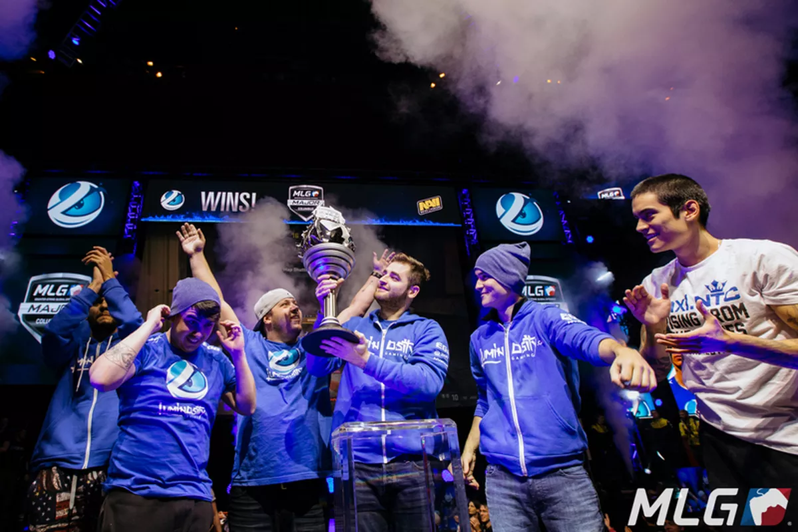

Nesse site, você vai saber beeem por cima a história de um dos maiores movimentos da comunidade de CS:GO do mundo, movimento esse que já chegou a quase parar a Twitch no dia de anunciamento, com doações e mensagens. Inclusive no dia de anunciamento, todo o dinheiro arrecadado foi para uma causa em Petropolis, um valor de R$56.000 (em uma live)
Começando pelo basico, Last Dance foi o nome dado a um grupo de jogadores que se reuniram para uma última vez, jogar profissionalmente CS:GO em busca do topo, assim como
ocorreu antigamente. Simplificando, esse grupo de jogadores já foram campeões mundiais do MAJOR (maior campeonato existente de CS:GO), alguns até duas vezes, mas assim como todo
jogador, acabaram perdendo o seu tempo de auge, tentaram novamente mas não tinham tanta motivação como antes.
Mas graças ao Gabriel Fallen Toledo, sua saída da Liquid (um dos maiores times profissionais na época) e a sua ideia de montar esse projeto, os antigos jogadores
decidiram participar e mais uma vez trazer o pódio do Brasil.
Bom, obviamente esse time não surgiu do nada, tem toda uma história por trás desse simples projeto gigante, e toda a comunidade Brasileira esta envolvida nesse
meio.
No dia 2015-07-28, Gabriel FalleN Toledo, Fernando fer Alvarenga, Marcelo coldzeraDavid, Lincoln fnxLau e Epitácio TACO de Melo se
juntaram e ingressaram na Luminosity Gaming, buscando o ínicio de suas carreiras no CS:GO. Com longos meses de dedicação, treino em equipe, vlogs, lives, e tudo que um
criador de conteúdo pode imaginar, eles conquistaram o coração dos Brasileiros, não só por conta disso, mas por já existirem desde a época do CS 1.6 (geração passada do CS:GO) e
já haverem conquistado titulos gigantes.
Logo mais, quase um ano depois, Fallen, companhia e Luminosity Gaming finalmente chegaram ao MLG Major Championship: Columbus 2016, passaram por diversos jogos apertados, difíceis e muito bem jogados, conseguiram finalmente chegar as finais e conquistaram não só o premio de $500.000, mas também um lindo troféu e a alegria de toda a comunidade brasileira, ao ganhar da Natus Vincere de 2 mapas consecutivos.

Na mudança de times, saindo da Luminosity Gaming e indo até a SK Gaming por meio de uma negociação, os jogadores novamente investiram ao Major seguinte. O ESL One Cologne 2016 foi responsável por trazer o segundo titulo mundial dos jogadores, um lindo troféu e um prêmio de $500.000, ocorreu entre os dias 5 e 10 de julho de 2016, mas somente no dia 10 foi quando a SK Gaming, junto de FalleN e sua equipe, levantaram o grande troféu do Major. Não era novidade pra ninguém que os brasileiros chegavam na Alemanha com o status de favoritos, apesar do fato de que no Major tudo pode acontecer.
Desde 10 de julho de 2016, o Brasil nunca mais venceu um Major. Nossa melhor chance foi com a Immortals, no PGL Major Kraków 2017, quando outros cinco brasileiros chegaram na grande final. A decisão, no entanto, foi cruel e acabou a favor da Gambit, que venceu de virada, por 2 a 1, após sofrer uma derrota de 16 a 4 no primeiro duelo.
Atualmente, a Last Dance conseguiu ingressar na Imperial Esports, graças a ajuda do Felipe felippe1 Martins, atual CEO da Imperial Esports. A line atualmente é fechada pelos jogadores:
Você deve estar se perguntando "Quem são os dois 'novos' jogadores boltz e VINI?", boltz não é nada novo, já jogou com todos esses nomes em diversos times, inclusive
na Luminosity Gaming e na SK Gaming, porém somente após a data do Major, ainda sim, boltz conquistou o carinho de muitos e hoje é um dos maiores nomes na comunidade.
E VINI realmente pode ser um novo jogador, ele veio de uma escola totalmente diferente dos outros jogadores, um estilo de jogo diferente e que agrega muito no time deles, ensinando e aprendendo com todos esses velhosgrandes jogadores. VINI saiu
do atual maior time Brasileiro somente para jogar com esses grandes nomes, é um grande risco a se correr, mas acho que qualquer um que conhece a história do CS
brasileiro correria, esses nomes basicamente levantaram todo o cenário e permitiram que outros jogadores chegassem aonde estão hoje, tudo graças a dedicação deles em
levantar essa comunidade.
No momento, a Imperial recentemente ganhou um campeonato Europeu, vulgo OMEN WGR European Challenge 2022, o que subiu muito sua classificação no ranking de times brasileiros, mas ainda não chegaram no ranking Tier-S (maior nível de disputa entre times). O que esperamos é que, como eles estão no momento treinando e se dedicando para se classificarem no RMR (Regional Major Rankings, ranking que classifica os times para disputarem o Major), consigam chegar no Tier-S e quem sabe (mas tomara), ganhar novamente um Major pro Brasil.
Caso queira saber mais sobre o que motivou o surgimento do Last Dance e como foi o anunciamento deles na Imperial, acesse os links destacados, onde o professor FalleN explica tudo direitinho, fala da história dele e dá a voz para os outros jogadores.